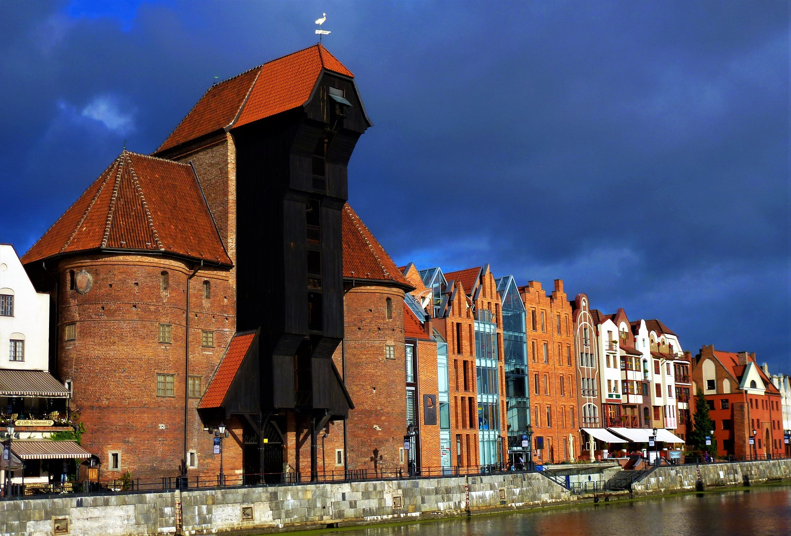

a
Gdańsk
– Stolica województwa pomorskiego, wraz z Gdynią i Sopotem tworzą Trójmiasto. Jest to miasto o ponadtysiącletniej historii, którego tożsamość na przestrzeni wieków kształtowała się pod wpływem różnych kultur.
Gdańsk był również największym miastem Rzeczypospolitej Obojga Narodów, miastem królewskim i hanzeatyckim, posiadał prawo do czynnego uczestnictwa w akcie wyboru króla, w XVI w. był najbogatszym w Rzeczypospolitej.
Należał do terytorium miasta Gdańska, położony był w drugiej połowie XVI wieku w województwie pomorskim. Miasto było też ważnym ośrodkiem kulturalnym. Gdańsk uznawany jest za symboliczne miejsce wybuchu II wojny światowej oraz początku upadku komunizmu w Europie Środkowej. Na terenie miasta znajdują się liczne zabytki architektury, działa w nim wiele instytucji i placówek kulturalnych.
Ciekawe miejsca
Pomnik Obrońców Wybrzeża – pomnik na półwyspie Westerplatte, przy wejściu do portu morskiego, na terenie byłej polskiej Wojskowej Składnicy Tranzytowej, upamiętnia polskich obrońców Wybrzeża we wrześniu 1939.
Źródło: Plik:Westerplatte, the place where the Second World War began.jpg - https://pl.wikipedia.org
Źródło: Plik:Amber museum6.JPG - https://pl.wikipedia.org
